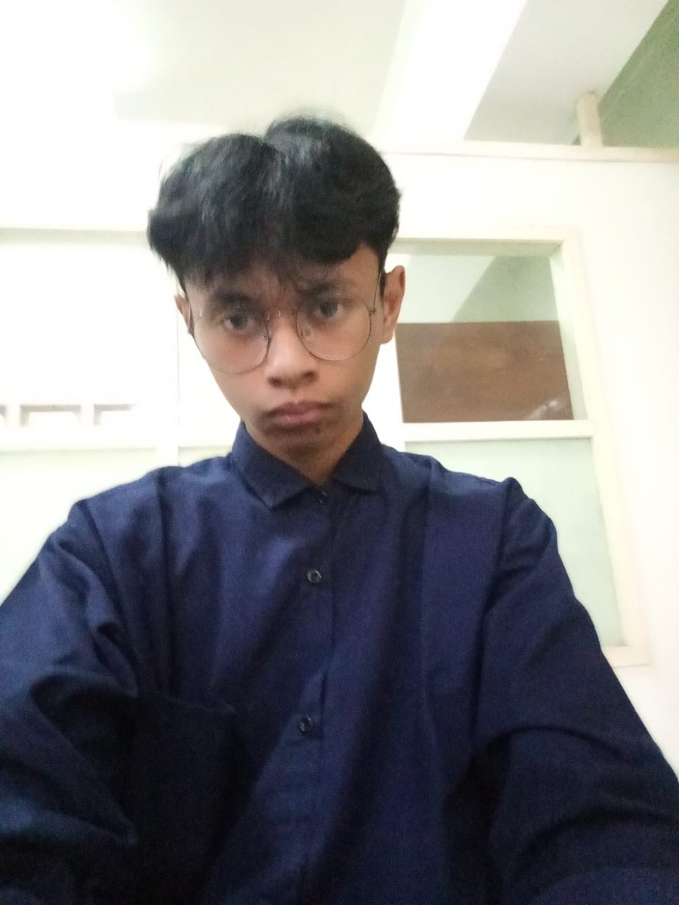

About Me
Sedikit cerita tentang siapa saya, apa yang saya pelajari, dan ke mana saya ingin melangkah.

- Nama
- Riyad Ahmad Abdullah
- NIM
- 245410063
- Prodi
- Informatika
- Semester
- 5
- Kampus
- Universitas Teknologi Digital Indonesia
- Lokasi
- Yogyakarta, Indonesia
Deskripsi Diri
Perkenalkan, saya Riyad Ahmad Abdullah, mahasiswa program studi Informatika semester 5 di Universitas Teknologi Digital Indonesia. Ketertarikan saya pada dunia teknologi dimulai dari rasa penasaran: bagaimana sebuah halaman web bisa tampil, bagaimana data tersimpan, dan bagaimana sebuah aplikasi bisa membantu pekerjaan orang lain. Rasa penasaran itu yang terus mendorong saya belajar sampai sekarang.
Selama kuliah, saya banyak belajar lewat praktik langsung. Saya terbiasa memulai dari hal kecil, seperti membuat halaman statis dengan HTML dan CSS, lalu menambahkan interaksi dengan JavaScript, hingga menghubungkannya dengan database. Dari proses itu saya sadar bahwa kode yang baik bukan hanya yang berjalan, tetapi juga yang rapi, mudah dibaca, dan mudah dikembangkan kembali.
Saya sudah mengerjakan dua projek, yaitu aplikasi Inventaris Barang dan Sistem Penjualan. Keduanya mengajarkan saya cara memahami kebutuhan pengguna, merancang alur data, dan menyelesaikan masalah yang muncul di tengah pengerjaan. Dari sana saya belajar bahwa aplikasi yang baik lahir dari pemahaman terhadap masalah, bukan hanya dari banyaknya fitur.
Di luar tugas kuliah, saya senang mempelajari hal baru, membaca dokumentasi, dan mencoba teknologi yang belum saya kuasai. Saya juga nyaman bekerja dalam tim, terbuka terhadap kritik, dan suka berbagi pengetahuan dengan teman. Ke depan, saya ingin terus meningkatkan kemampuan sebagai pengembang web dan membangun aplikasi yang benar-benar berguna bagi banyak orang.
Skills
Kemampuan teknis yang saya kuasai saat ini dan terus saya asah.
Kemampuan pendukung
- Desain responsif
- Pemecahan masalah
- Kerja sama tim
- Manajemen data
- Belajar mandiri